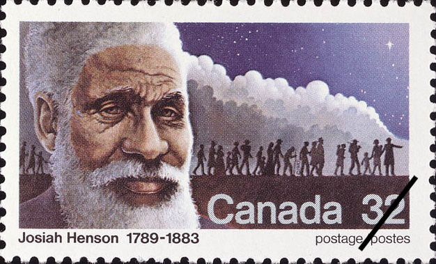
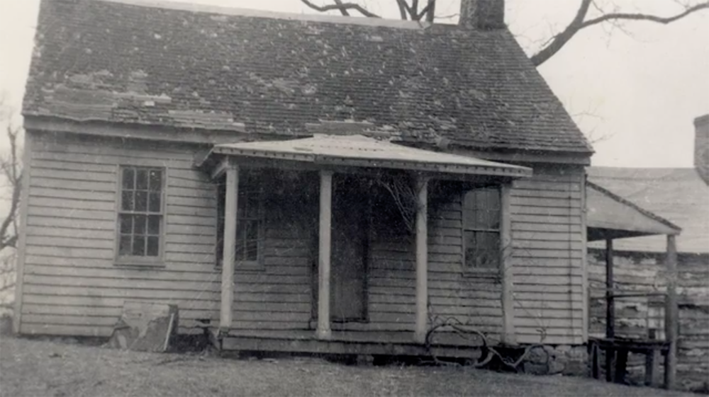
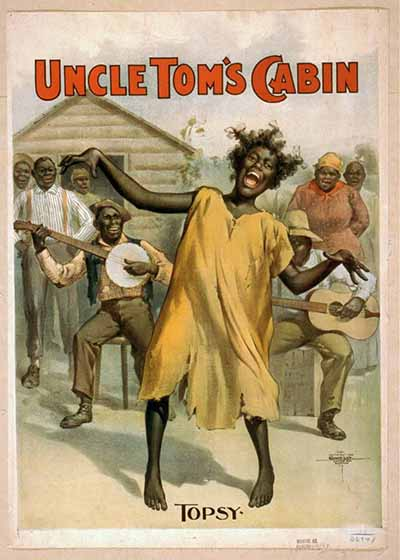

Henson originally rose to fame as the inspiration for Stowe's title character in Uncle Tom's Cabin, a legacy that has endured for better or worse. (Schlib Antiquarian)
Uncovering Josiah Henson
SEVEN miles from Washington, D.C., sits a small white house on a one-acre property, barely visible from bustling Old Georgetown Road in Rockville. It is dwarfed by other houses in the surrounding real estate development, a product of the prosperity seen in the Washington region over the last several decades.
Generations ago the small house belonged to the Riley family—plantation owners that oversaw a 200-acre property driven by slave labor. Many of the neighbors might be now surprised to learn their that not only are their homes located on what used to be Isaac Riley’s land, but that one of the most heroic figures of the abolitionist movement was enslaved there for 35 years.
Josiah Henson’s story is largely unknown and is still being uncovered, but by any measure he led a remarkable life. Born into slavery in 1789, and sold to the Riley family six years later, Henson escaped to freedom as an adult through the Underground Railroad with his wife and four children. He then established a settlement in Ontario for runaway slaves, and worked as a conductor on the Underground Railroad, helping 118 enslaved people reach freedom.
Henson is best known, however, as the inspiration for Harriet Beecher Stowe’s title character in her groundbreaking novel Uncle Tom’s Cabin. Stowe credits his autobiography, "The Life of Josiah Henson, Formerly a Slave, Now an Inhabitant of Canada, as Narrated by Himself," as very influential in crafting the character of Tom. When Uncle Tom's Cabin was released in 1852, the book gained unprecedented popularity, was translated into languages all over the world and ignited the abolitionist movement.
Montgomery County Parks purchased the Riley House (now called Josiah Henson Park) in 2006, with the goal of building a museum that chronicles Henson’s life and teaches visitors about the slave experience in Maryland. For the past 12 years, the county has led group tours of the house and grounds, but has just last month began construction of the new museum, visitor’s center and outdoor reflective park. It is slated to open in 2020.
“Our job is to emancipate Josiah Henson one more time."
“With the acquisition of this property, we’ve been working over the past 10 years to raise awareness,” museum director Shirl Spencer said. “He’s critically important to Maryland. And he’s a unknown story that we had not had an opportunity to explore in decades.”
Spencer said that while the house is historical in its own right, the museum would not be a typical house museum with period furniture installed, such as Mount Vernon. The interior will be stripped of all furnishing and will feature exhibits focusing on Henson’s life with snippets from his autobiographies and narratives.
“Much of the research has been really focused on Henson, and getting a broader look of how he fits into this Maryland story,” Spencer said.
While mostly unknown in the U.S., Henson gained wide fame in Canada for his work with the Dawn Settlement. On the 100th anniversary of his death, Canada issued stamps bearing his image. (Canada Post)
Perhaps the most historically significant piece of the property is a log kitchen attached to the right of the house. It was in that kitchen that the cook would have prepared meals for the Riley family and lived in the kitchen’s second-story loft, which has since been removed. While the kitchen was attached in 1850, 20 years after Henson lived on the plantation, excavations have unearthed three previous floors inside the same kitchen space, suggesting that Henson could have stood on that very surface.
Archeologists have also found evidence suggesting the overseer’s house was located just behind the Riley house. Henson was the last overseer on the plantation and it is very likely that Henson and his family resided at that location.
“When we acquired the property we did extensive research, a historic structures report, archeological surveys and excavations began so that we could determine first who lived where,” she said.


JOSIAH Henson was born on a farm in Charles County, a mile away from the town of Port Tobacco on June 15, 1789. As a young child, he was sold to the Riley plantation with his mother, though his brothers and sisters were auctioned to another owner. His only memory of his father is of seeing him horribly beaten and maimed by a slave master.
Though Henson described Isaac Riley as “unprincipled and cruel” he was a loyal servant for the better part of 35 years, becoming the plantation overseer as a young man. He sought to impress his master, compelling the plantation’s other slaves to work “many an extra hour, in order to show my master what an excellent day’s work had been accomplished, and to win a kind word or a benevolent deed from his callous heart,” Henson said in his autobiography.
Riley trusted Henson to such a degree that when Riley sent Henson to his brother’s plantation in Kentucky, Henson accompanied 18 of his fellow slaves on the journey. Henson was so loyal that while in the free state of Ohio he convinced his companions not to escape, a fact that Henson would deeply regret decades later. Henson remained in Kentucky for three years on Riley’s brother’s plantation, also working as a preacher in the Methodist Church.
“I threw myself on the ground, rolled in the sand, seized handfuls of it and kissed them..."
Upon his return to Maryland, Henson arranged to buy his freedom, but was betrayed out of his money when Riley, frequently in financial trouble, secretly raised the price. Henson was sent to New Orleans to be sold, but was spared when Riley’s nephew who escorted him down south grew sick and requested that Henson transport him back home to Kentucky. Spencer referred to this event as “divine intervention.”
The Riley Plantation House pictured in the 1930s. Attached to the right side of the house is a log kitchen that dates back to Henson's time. (PBS)
After the betrayal by Riley and witnessing the horrific conditions of the enslaved while traveling in the Deep South, Henson decided that he had had enough. From Kentucky, he, his wife and his four children managed a harrowing escape across the Ohio River, eventually reaching Ontario six weeks later on October 28, 1830.
Henson vividly recalled the moment he set foot in Canada in his autobiography: “I threw myself on the ground, rolled in the sand, seized handfuls of it and kissed them, and danced around, till, in the eyes of several who were present, I passed for a madman.”
As a free man in Canada, Henson worked as a farmhand for a few years before joining with other free blacks to buy a collective 200-acre plot of land near Colchester, Ontario, in 1834. The Dawn Settlement for fugitive slaves was born.
Josiah Henson's Travels
Education was a staple in the settlement, which was established with the primary goals of teaching the free black refugees to become self-sufficient and better assimilated to white society, according to historian Robin Winks. With the financial backing of abolitionist groups in the U.S. and Canada, Dawn had a school for children, which Henson would become the manager in 1943. At its peak, Dawn had around 500 inhabitants, collectively owning some 1500 acres of land, where they grew oats, wheat, tobacco and corn.
During this period, Henson returned to the U.S. several times to help slaves, mostly from Kentucky, escape through the same route he made with his family in 1830. In all, he helped guide 118 slaves to freedom, an extremely dangerous endeavor.
“It’s going to be interesting having this park come online... Racial tensions in the country are high.”
Henson was instrumental to the early success of the Dawn Settlement, as he was the most famous and influential fugitive slave in Canada at the time, according to Winks. He visited England three times to raise money for the Settlement, even having a booth at the first World’s Fair in London in 1851. In 1877, he returned to London and met Queen Victoria.
The settlement would eventually start to struggle by the 1860s when mismanagement led to the shuttering of the school. Henson would live at Dawn with his wife Nancy till his death in 1883.
“Our job is to emancipate Josiah Henson one more time,” Dr. Cheryl LaRoche, a historian involved in the museum planning, said in an interview with PBS.
Maryland Population 1790-1860
Slave Population vs. Free Population
Source: US Census DataDESPITE Henson’s improbable and remarkable life achievements his connection to Stowe’s novel endures—for better or worse.
While Stowe originally wrote Uncle Tom’s Cabin with the specific purpose of drawing attention to the crime of slavery, the book’s legacy is complicated. In the years after its release, the character of Uncle Tom grew into a caricature of black people and popularized many black stereotypes. Today, the moniker “Uncle Tom” is widely known as a derogatory term for black people subservient to whites.
While written by Harriet Beecher Stowe to draw attention to the horrors of slavery, Uncle Tom's Cabin evolved in the decades following its release to mean something much darker. Staged "Tom Shows" mocked the book's characters and original meaning. (National Archive)
Spencer sees the connection between Henson and Uncle Tom as a primary reason why his story is not as celebrated as it ought to be.
A goal of the museum will be to “divorce him from the fictional character and focusing on his life, and then taking it apart and helping people be aware that it really was an extraordinary life,” she said.
Southern Population at Time of Josiah Henson's Birth
Includes 1790 census totals from DE, MD, VA, KY, NC, SC, and GA
Source: US Census dataAs it stands now, the Josiah Henson Museum in Rockville will be the only museum in Maryland to focus specifically on the state’s history with slavery. Spencer said that she has met “too many” people unaware that Maryland was a slave state. In 1790, the year of the first U.S. Census, nearly one in three Marylanders were enslaved.
Spencer added that she hopes the museum will become a safe space for visitors to discuss race and racism, as it exists contemporarily. The park's sign was vandalized twice, she said.
“It’s going to be interesting having this park come online, and the timing that it’s coming online. Racial tensions in the country are high.”